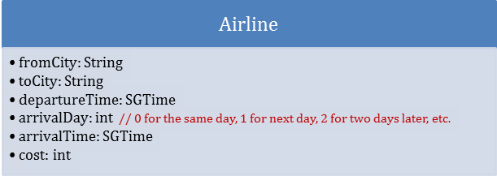

CS1020E Take-home Lab #2
Exercise #3: Airlines Query System
Task Statement
ZGDH serves N airlines that fly among a group of cities. To serve the customers better, the CTO wants to build a system that is able to answer the following queries:
1. What is the earliest departure time from City A to City B?
2. What is the earliest arrival time from City A to City B?
3. What is the shortest flight time from City A to City B?
4. What is the lowest cost to fly from City A to City B?
You are to create three Java classes, namely SGTime, Airline, and Query. SGTime stores the hour and minute of Singapore time. Airline keeps the following information:

The Query class stores a list of Airlines served and implements methods to answer the 4 types of query.
You are also to write a client ProcessQueries to accept user’s queries and output the answers to each query. A query is in the form of
queryType fromCity toCity currentTime
where queryType is an integer in [1, 4] corresponding to the 4 types of queries above. For example, if queryType is 1, the query is about the earliest departure time. If queryType is 2, the query concerns the earliest arrival time. If queryType is 3 or 4, then it concerns the shortest flight time or the lowest cost respectively. You may assume that there exists at least one airline that flies from the departure city to the arrival city.
Input
The first line contains an integer N, which is the number of airlines.
Each of the following N lines contains the information of an airline:
fromCity toCity departureTime arrivalDay arrivalTime cost
This is followed by an integer Q, which is the number of queries.
Each of the following Q lines contains a query in the form of:
queryType fromCity toCity currentTime
All the times are displayed in Singapore time, and costs in Singapore dollars. To take a flight, the current time must be at least 1 hour earlier than the departure time of the flight.
Output
For each query, output the complete information of the desired airline. If multiple answers exist, output the airline which appears earliest in the input list.
Sample Input
6
CDSL SGP 6:00 0 10:20 550
CDSL SGP 22:00 1 3:00 500
CDSL SGP 22:10 1 2:30 550
SZBA SGP 10:00 0 14:10 300
SZBA SGP 11:00 0 14:20 400
SZBA SGP 23:20 1 2:10 400
7
1 CDSL SGP 8:00
2 CDSL SGP 8:00
3 CDSL SGP 8:00
4 CDSL SGP 9:00
1 SZBA SGP 9:00
2 SZBA SGP 9:00
2 SZBA SGP 10:00
Sample Output
CDSL SGP 22:00 1 3:00 500
CDSL SGP 22:10 1 2:30 550
CDSL SGP 6:00 0 10:20 550
CDSL SGP 22:00 1 3:00 500
SZBA SGP 10:00 0 14:10 300
SZBA SGP 10:00 0 14:10 300
SZBA SGP 11:00 0 14:20 400
Explanations:
1. Query 3: output the one appears earliest in the input list.
2. Please note that minutes always consist of 2 digits, while hours can be 1 or 2 digits.